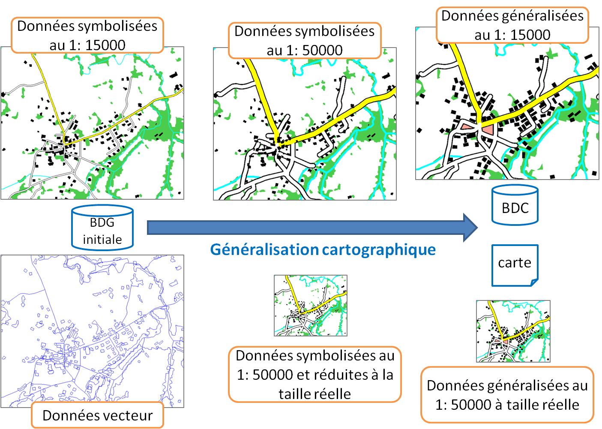
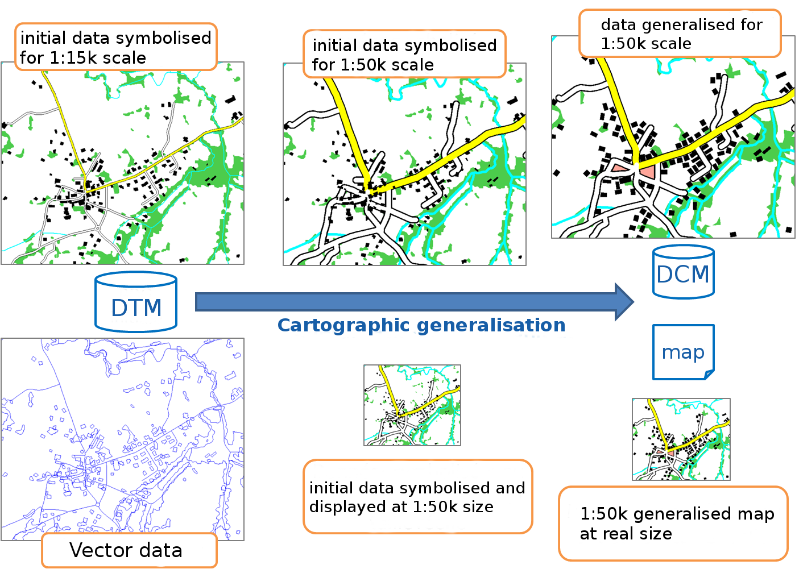

My research on Scale issues in geovisualisation
Topographic maps are not the only ones that require a visualisation at multiple scales, and the principles of map generalisation can be extended to most of the visualisations of spatial data. In my recent research projects, I focus more and more on the multi-scale visualisation of thematic spatial data, and this research is presented in this page.
Les cartes topographiques ne sont pas les seules que l'on souhaite visualiser à plusieurs échelles, et les principes de la généralisation cartographiques peuvent être étendus à d'autres visualisations de données spatiales. Dans mes projets de recherche récents, je travaille de plus en plus sur des visualisations multi-échelles de données spatiales thématiques (et pas simplement des cartes topographiques), et ces recherches sont présentées dans cette page.
 Geovisualisation of Health Data
Géovisualisation de données de santé
Under construction...
Page en construction...
Generalisation Orchestration
Orchestration de la généralisation
Generalisation processes seek to automate the application of several algorithms on different map features to generalise a part or the totality of the map. Generalisation processes make automated decision on the orchestration of the algorithms: which algorithm to use, on what map features, with what parameters?
Un processus de généralisation cherche à appliquer automatiquement le bon algorithme aux différents objets de la carte pour la généraliser en partie ou totalement. Les processus de généralisation prennent de manière automatique des décisions sur l'orchestration des algorithmes: quel algorithme ? sur quels objets ? avec quels paramètres ?
CollaGen model
Modèle CollaGen
While generalization processes such as AGENT, or CartACom, orchestrate the use of generalization algorithms, CollaGen goes one step upper in the generalization orchestration by orchestrating the use of generalization processes on different parts of the map, in order to fully generalize a complete map. CollaGen was mainly developed during my PhD.
Alors que les processus de généralisation comme AGENT, ou CartACom, orchestrent l'application des algorithmes sur différents objets, le modèle CollaGen monte d'un niveau dans l'orchestration en orchestrant l'utilisation des processus de généralisation comme AGENT ou CartACom sur différentes parties de la carte, afin de la généraliser complètement. CollaGen a été essentiellement développé pendant ma thèse.
- Touya, Guillaume. CollaGen: Collaboration between Automatic Cartographic Generalisation Processes. In Proceedings of 12th ICA Workshop on Generalisation and Multiple Representation, Zurich, Switzerland, 2010.

- Touya, Guillaume, Cécile Duchêne, and Anne Ruas. Collaborative Generalisation: Formalisation of Generalisation Knowledge to Orchestrate Different Cartographic Generalisation Processes. In Geographic Information Science, edited by Sara Fabrikant, Tumasch Reichenbacher, Marc van Kreveld, and Christoph Schlieder, 6292:264–278. Lecture Notes in Computer Science. Berlin, Heidelberg: Springer Berlin / Heidelberg, 2010.
- Touya, Guillaume, and Cécile Duchêne. CollaGen: Collaboration between Automatic Cartographic Generalisation Processes. In Advances in Cartography and GIScience, edited by Anne Ruas, 1:541–558. Lecture Notes in Geoinformation and Cartography. Berlin, Heidelberg: Springer Berlin Heidelberg, 2011.
ScaleMaster2.0
The ScaleMaster framework was first proposed by Brewer & Buttenfield (2007). It allows the specification of multi-scale maps in a graph similar to a timeline where scale replaces time. Further experiments on multi-scale maps design with the ScaleMaster were presented by Brewer & Buttenfield (2009). The ScaleMaster2.0 is updated version of the ScaleMaster dedicated to automated generalization based on the rules of a ScaleMaster. It was proposed by Touya & Girres (2013)
Le concept du ScaleMaster a été proposé initialement par Brewer & Buttenfield (2007) Ce modèle permet de définir les spécifications de cartes multi-échelles dans un graphique similaire à une frise où l'échelle remplacerait le temps. Plusieurs expériences de conception de cartes multi-échelles avec ce ScaleMaster sont présentées dans Brewer & Buttenfield (2009). Le ScaleMaster2.0 est une extension du ScaleMaster qui permet de déclencher des généralisations automatiques à partir des spécifications définies dans le ScaleMaster. Le modèle a été proposé dans Touya & Girres (2013)